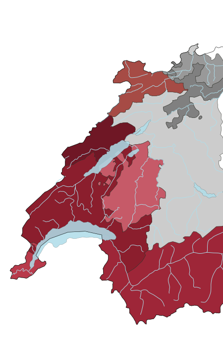

Lausanne

Capitale Olympique
Les premières traces d'hommes à Lausanne remontent environ au VIe siècle avant J.-C. Depuis ce temps, Lausanne s'est développée jusqu'à devenir la quatrième ville du pays en nombre d'habitants, juste après Zurich, Genève et Bâle. De ce fait, elle est la deuxième ville la plus peuplée de Suisse romande. La grande particularité de Lausanne est le nombre d'institutions internationales liées au sport qu'elle abrite entre ses murs. Depuis 1915, s'y trouve le siège du Comité international olympique (CIO). Mais on peut aussi retrouver une cinquantaine de fédérations et d'organisations sportives internationales et nationales comme l'Agence mondiale antidopage (AMA). L'épithète de Capitale olympique lui a été attribuée en 1993.
Activités
Musée olympique
Le musée olympique, situé sur les hauteurs du quai d'Ouchy au bord du Léman, a ouvert ses portes le 23 juin 1993 à Lausanne. La thématique des Jeux olympiques va y être abordée, en passant de ses origines à l'esprit du sport, jusqu'à la vie quotidienne d'un sportif olympique.

| Tarif | Prix |
|---|---|
| Adulte (dès 16 ans) | CHF 20.- |
| Enfant (jusqu'à 15 ans) | Gratuit |
| Réduit (étudiant/AVS) | CHF 14.- |
| Groupes à partir de 10 personnes | CHF 14.- |
| Carte Raiffeisen Young member plus | Gratuit |
Mon avis :
Je trouve ce musée particulièrement attractif par la manière diversifiée qu'il a d'aborder sa thématique. Les visiteurs n'ont pas le temps de s'ennuyer car l'information nous est transmise de manières très variées. Tout au long de la visite, nous sommes guidés par des vidéos, des audios explicatifs, des costumes ou encore des frises chronologiques. De plus, le dernier étage nous permet de clôturer le musée en beauté avec une partie jeu sur la thématique des Jeux olympiques.
Le théâtre de Vidy
L'infrastructure de Vidy a été construite sous le nom initial de ''Théâtre de l'Expo'' en 1964 dans le cadre de l'Exposition nationale par Max Bill. Ce théâtre compte quatre salles connues sous les noms de Charles Apothéloz (430 places), La Passerelle (98 places), René Gonzalez (150 places) et Le Pavillon (250 places). Mais un des emplacements principaux de Vidy reste le foyer connu sous le nom de La Kantina. C'est un espace modulable qui permet d'accueillir différents types de manifestations. Ce centre multiculturel propose de nombreux spectacles qui peuvent prendre la forme de pièces de théâtre, de démonstrations de danse ou encore de performances artistiques.

Tarif : Les prix varient de 15.–* | 20.– | 25.– | 30.– | 40.– | 50.– CHF *Moins de 26 ans/Carte Culture
Mon avis :
Le complexe de Vidy propose des évènements très polyvalents. La programmation variée permet d'amener tous types de spectacles en terre romande. Je trouve aussi que les tarifs pour les moins de 26 ans peuvent être très attractifs selon le spectacle et peuvent permettre d'économiser sur un billet de type standard. De plus, le fait que l'infrastructure de Vidy soit au bord du lac apporte un petit bonus.
Pulloff Théâtre
Le Pulloff Théâtre, par son emplacement dans les anciens magasins de la ville, permet une vraie évasion de Lausanne. Certes moins connu que l'infrastructure de Vidy, ce lieu permet aux compagnies de théâtre indépendantes de se produire sur scène.

| Tarif | Prix |
|---|---|
| Adulte | CHF 35.- |
| AVS, étudiants, chômeurs | CHF 27.- |
| *Prix réduit pour les Pro, Cultissime, Pass Culture, Caritas |
Mon avis :
J'ai connu le Pulloff Théâtre sur un coup de chance. Nous voulions instaurer avec un ami la tradition d'aller au théâtre ensemble au moins une fois par mois afin de nous ouvrir un peu plus au monde de la culture. Je me souviens que, débutante que j'étais encore dans le monde culturel, j'avais juste tapé sur un moteur de recherche ''pièce de théâtre en Suisse''. Je suis assez vite tombée sur une annonce promouvant une pièce d'Antigone. Adorant cette figure mythique, il ne m'en fallut pas plus pour réserver deux places pour mon ami et moi. C'est de cette manière que je me suis retrouvée dans cette petite salle de 50 places à l'ambiance intimiste. À la fin de la représentation, ma première envie a été de revenir. Une action que j'ai réitérée à de nombreuses reprises.
Fun fact
Lausanne est principalement connue pour ses montées et descentes abruptes. Cela n’a rien d’étonnant car la ville prend fondation sur trois collines. Si vous avez peur de ces pentes dénivelées, ne vous inquiétez pas car vous pourrez toujours vous servir d'une vingtaine d'ascenseurs éparpillés un peu partout dans la ville comme raccourcis.

Vevey

Ville d'image
Le concept de Ville d'Image commence à apparaître en 1998 pour mettre en avant l'industrie de la photographie qui occupe une place importante à Vevey. En effet, on peut y retrouver de multiples entreprises et institutions liées à l'image et à la communication, que ce soit sur le plan culturel ou économique. Par exemple, le Centre d'Enseignement Professionnel de Vevey (CEPV) offre différentes formations en photographie et en communication visuelle. La ville comporte aussi de nombreux musées abordant la thématique de la photographie comme le Musée suisse de l'appareil photographique qui retrace l'histoire et les pratiques de la photographie de ses origines à la révolution numérique.
Activités
Alimentarium
L'Alimentarium est plus qu'un simple musée sur l'alimentation. Il amène ses visiteurs à avoir des réflexions sur le système alimentaire en lien tant avec l'environnement qu'avec la santé planétaire. Le musée se prolonge avec un potager qui comporte une trentaine de variétés et une partie cuisine où plusieurs activités en lien avec l'art culinaire sont proposées au public. L'Alimentarium comporte aussi un espace junior avec des ateliers de cuisine adaptés aux enfants.
| Tarif | Prix |
|---|---|
| Adulte | CHF 15.- |
| Tarif réduit | CHF 6.- |
| Enfant (de 6 à 15 ans) | CHF 14.- |
| Enfant (jusqu'à 5 ans) | Gratuit |
| Carte Raiffeisen Young member plus | Gratuit |
Mon avis :
Lors de mon enfance, j'ai assisté à plusieurs ateliers de cuisine de l'espace junior et, d'après les bons souvenirs que j'ai pu garder, je recommande cette expérience. Attention, il faut s'inscrire au préalable avant l'activité. Quant au musée, il est varié et convient vraiment à tous les âges. Il manie avec brio les différents types de supports mis à disposition des visiteurs, au point qu'il est impossible de s'ennuyer au cours de la visite. La dernière fois que je m'y suis rendue avec ma meilleure amie, les 2h30 de notre visite nous ont donné l'impression que cela ne faisait qu'une heure que nous avions commencé notre visite.
Musée Charlie Chaplin
Le domaine a ouvert ses portes le 17 avril 2016, le jour suivant le 127e anniversaire de la naissance de ce dernier. C'est le seul musée dans le monde à être dédié à cet illustre personnage ainsi qu'à ses œuvres et à sa famille. Il prend la forme d'un parcours d'environ 2h30 à faire en famille ou entre amis.

| Catégorie | Ticket daté individuel | Tickets à date libre |
|---|---|---|
| Adulte (dès 16 ans) | CHF 26.- | CHF 30.- |
| Jeune (de 6 à 15 ans) | CHF 19.- | CHF 22.- |
| Senior (dès 60 ans) à | - | CHF 29.- |
| Étudiant | - | CHF 25.- |
Mon avis :
Le point fort du musée reste indéniablement sa grandeur. Il se visite autant à l'intérieur de ses murs qu'à l'extérieur. Si vous avez la chance d'aller le visiter un jour de beau temps, vous pourrez profiter d'une balade sur les sentiers qui bordent le magnifique jardin de la demeure Chaplin. Je trouve que le musée permet une mise en abyme totale, autant dans l'univers de Charlie Chaplin que dans la vie de Charles Spencer Chaplin, rendue possible en partie grâce aux innombrables extraits de films et d'archives projetés tout au long de la visite.
Le National
Le National prend la forme d'un restaurant-bar idéalement situé à côté de la place du marché et au bord du lac. C'est un lieu agréable avec une terrasse qui nous donne le sentiment de quitter la ville. Je vous le recommande pour passer un chaleureux repas avec une carte de choix proposant de nombreuses alternatives pour différents régimes alimentaires ou juste pour prendre un verre. Le choix des boissons, qu'elles soient chaudes ou froides, bénéficie aussi d'une carte variée.
 Pour plus d'informations:
https://www.lenational.ch/
Pour plus d'informations:
https://www.lenational.ch/
Fun fact
Dans le lac Léman se trouve une fourchette en acier inoxydable de 8 mètres de haut. Cette œuvre d'art a été installée en face de l'Alimentarium en l'honneur des 10 ans du musée. Si vous observez attentivement, vous apercevrez des poils à son sommet !

Gruyère

Une ville médiévale
Juchée sur sa colline, Gruyère fut connue en 1195 pour être une ville de marché se développant sous le pouvoir du comte Rodolphe Ier de Gruyère. De nos jours, cette commune dispose encore d'un remarquable patrimoine médiéval. Quand on se promène dans ses ruelles, on ne peut qu'être happé par le décor historique qu'elles nous offrent avec ses bâtiments pittoresques qui ont survécu à travers les âges. Depuis 2016, le village fait partie de l'association ''Les plus beaux villages de Suisse'' et obtient en 2021 le label Meilleurs villages touristiques de l'Organisation mondiale du tourisme (OMT).
Activités
Le musée Giger
L'histoire du musée commence à l'occasion du 50ème anniversaire de Giger. En l'honneur de cet évènement, il organisa une exposition au château de Gruyère nommée ''Alien dans ses meubles''. Giger tomba sous le charme de cette ville et décida d'acheter le château Saint-Germain dans le but d'en faire un musée au vu de l'immense succès que fut sa dernière exposition à Gruyère. L'inauguration du musée se déroula le 21 juin 1998. Les visiteurs peuvent retrouver les œuvres de Giger allant du début des années 1960 jusqu'à maintenant.

| Catégorie | Ticket individuel | Ticket de groupe |
|---|---|---|
| Adulte | CHF 12.50 | CHF 8.50 |
| AVS/Étudiant/Militaire | CHF 8.50 | CHF 7.50 |
| Enfant | CHF 4.- | CHF 3.- |
| Carte Raiffeisen Young member plus | Gratuit | Gratuit |
Mon avis :
Je trouve que le musée nous garantit une expérience immersive dans les œuvres d'arts de Giger. A travers celle-ci se démène un combat intérieur du visiteur pour essayer d'entrer tant bien que mal dans le psyché de cet illustre artiste. L'atmosphère du musée nous coupe de l'ambiance tradition du village nous donnant l'impression de vivre une expérience hors du temps.
Attention certaines œuvres peuvent choquer la sensibilité des plus jeunes.
Le château de Gruyère
Le château de Gruyère fait office de véritable emblème historique dans la région. La première fois qu'il est mentionné est dans des archives remontant à 1244. A cette époque, l'édifice était la résidence officielle d'une famille noble, les comtes de Gruyère. Le château a été bâti selon le modèle du carré savoyard qui a été développé par la famille des savoie dans un but militaire. L'édifice est protégé par une enceinte presque carré. Mais en 1554 à cause de problèmes d'argent, le château fut confisqué par les principaux créanciers, Berne et Fribourg.

| Tarif | Prix |
|---|---|
| Adulte | CHF 13.- |
| AVS/Étudiant | CHF 9.- |
| Groupe (dès 15 entrées ‘’adulte’’) | CHF 9.- |
| Enfant (de 6 à 15 ans) | CHF 5.- |
| Moins de 6 ans | Gratuit |
| Forfait Famille (deux adultes et un à trois enfants) | CHF 29.- |
| Passeport Musées suisses/ Membres plus Raiffeisen/AMS/ICOM | Gratuit |
| Ami.e du Château | Gratuit |
Mon avis :
Dans ce château vivait la belle Luce qui était la femme la plus magnifique de la région. Cette légende est une des raisons pour lesquelles je porte le prénom que j'ai actuellement. D'ailleurs, le surnom que mon père me donnait était Luce. De ce fait, je pense ressentir une attache toute particulière avec ce lieux. J'y le visite depuis ma tendre enfance et je n'ai jamais été déçu. Chaque visite me fait replonger dans son univers médiéval comme si c'était la première fois que je le découvrais.
Fun fact
On a tendance à confondre le gruyère et l'emmental. Mais il y a une technique très simple pour les différencier. Le gruyère n'est pas troué alors que l'emmental possède des trous.

Loèche-les-Bains

Le cœur de la sources des alpes
Cette commune qui prend place dans la très rare partie germanophone de la Suisse romande est connue pour ses sources thermales. Bien que les premières traces de Loèche-les-Bains remontent au IIe siècle après J.-C., il faudra attendre 1478 pour voir apparaître les premières traces de bains thermaux. De plus, c'est à cette époque que les premières auberges ouvrent leurs portes. De nos jours, Loèche-les-Bains est une destination très appréciée des touristes, perchée à 1'411 mètres dans le sud-ouest du canton du Valais. Ce lieu est idéal pour des vacances ou un simple week-end d'escapade tout au long de l'année grâce à son large choix d'activités, passant de la simple sortie au ski à un après-midi détente au spa.
Activités
Sentiers des sources thermales
Difficulté facile
Le sentier des sources thermales est un parcours d'environ une heure qui se déroule le long d'un sentier d'une longueur d'environ 600 mètres et suspendu à une hauteur minimale de quatre mètres au-dessus d'un torrent. Ce parcours offre la chance à ses promeneurs de pouvoir franchir un pont suspendu long de 21 mètres qui débouche face à une cascade de 35 mètres de haut. Il permet de partir à la découverte du monde fascinant de l'eau thermale et de comprendre le chemin qu'elle peut parcourir pour arriver dans nos grands bains chauds. Les visiteurs peuvent même entrer en contact direct avec cette fameuse eau chaude en la puisant directement depuis une source avec un petit treuil.

Mon avis :
C'est un endroit qui me tient particulièrement à cœur car il fait partie de mes premiers souvenirs de promenade que j'ai effectués avec ma famille. Je pense qu'il ne se passe pas un été depuis mon plus jeune âge où je n'ai pas parcouru ce sentier. Je le recommande fortement pour la beauté de ses paysages et les bons souvenirs qu'il vous laissera. C'est une balade qui plaira aux plus jeunes comme aux plus âgés.
Les échelles d'Albinen
Difficulté moyenne
Ce sentier pédestre s'est construit sur la plus ancienne via ferrata de Suisse, qui datait de 1781. Ce passage était l'unique route commerciale située entre les villages d'Albinen et de Loèche-les-Bains. Les échelles, au nombre de huit, mènent les promeneurs directement au pied du téléphérique de Flachen-Torrentalp. Les promeneurs peuvent continuer leur petit tour jusqu'à Albinen, qui est un village authentique valaisan.

Mon avis :
C'est moi qui ai fait découvrir ce sentier à ma famille et la manière dont je l'ai découvert mérite d'être racontée. Je ne me souviens plus exactement de l'âge que j'avais au moment des faits mais je me rappelle que c'était au cours d'une promenade avec mon cavalier king Charles. Cela faisait déjà bien 20 minutes que j'avais commencé la balade et, pour une raison obscure, je ne voulais pas rebrousser chemin. Même lorsque je suis arrivée devant un panneau mettant en garde que le reste du parcours devait être emprunté par des promeneurs avertis et ne souffrant pas de vertige, je n'ai pas songé à m'arrêter alors que j'étais toujours accompagnée de mon chien. Aussi absurde et dangereux que cela puisse paraître, mon inconscience enfantine m'a poussée à emprunter les deux premières échelles avec mon pauvre canidé sous le bras. D'ailleurs, à la fin de la seconde échelle, les promeneurs ont la chance d'arriver dans une sorte de grotte creusée dans les parois de la montagne où se situe un banc qui permet de profiter pleinement de la vue qui s'offre à eux. Évidemment que je ne suis pas allée plus loin avec mon chien mais, par contre, je me suis empressée de retourner à mon logement afin de pouvoir expliquer ma découverte à mes parents. Le lendemain, nous effectuions cette randonnée en famille.
Attention, marche vraiment déconseillée si vous souffrez de vertige.
Le chemin du col de la Gemmi
Difficulté difficile
Le sentier du col de la Gemmi prend son départ dans les hauteurs de Loèche-les-Bains. Ce chemin vous fera arpenter le flanc d'une falaise et vous offrira une vue spectaculaire sur Loèche-les-Bains et les sommets qui l'entourent. Cette marche de deux heures vous mènera sur un itinéraire creusé dans la roche il y a des siècles, permettant de vivre une expérience hors du temps entre nuages et montagnes à celui qui osera l'emprunter. Le parcours prend fin à la station de télécabine de la Gemmi.

Mon avis :
Je trouve personnellement cette marche très difficile autant pour la montée que pour la descente. Un des meilleurs conseils que je peux vous donner si vous voulez l'effectuer est de partir tôt le matin avant que le soleil ne soit trop haut dans le ciel, car les dernières montées vous seront fort désagréables sous une forte chaleur. Mais malgré la difficulté, la vue panoramique vaut les efforts fournis.
Fun fact
Loèche-les-Bains dispose du plus grand complexe thermal en Europe. Mais ce n'est pas le seul record que détient cette petite commune car elle possède aussi le plus grand centre de bien-être avec le Lindner Alpentherme qui propose plus de 240 prestations. Ce centre possède ses propres bassins autant extérieurs qu'intérieurs mais il a aussi son propre village valaisan de saunas.

Villars-Tiercelin

Le parcours handicap a un seul objectif qui est de prioriser l'accessibilité aux chaises roulantes. Tout dans ce parcours a été conçu et monté afin de permettre l'accès aux personnes handicapées. Tout au long du sentier, des aires de pique-nique ont été aménagées afin de permettre aux promeneurs de faire une pause boisson ou même de manger. Il y a aussi de multiples sorties aménagées qui permettent de réduire le parcours. Des observatoires ainsi que des exercices équipés spécialement pour les personnes handicapées ont aussi été installés au cours du sentier.
Petit Plus
Le projet parcours handicap est né d'une idée de Michel Graz qui est le chef d'exploitation des ateliers de la Fondation vaudoise de probation (FVP). De ce fait, ce projet prend une symbolique forte qui est très justement résumée avec cette citation : ''La privation de liberté au service de la privation de mobilité''. Mais ce sentier, en plus d'être ludique et de servir une bonne cause, est aussi écologique. En effet, ce parcours a été fabriqué à partir de chênes qui devaient être abattus pour garantir la pérennité de la forêt. Il est aussi démontable et remontable en fonction des besoins forestiers.
Aigle

Le parcours aventure d'Aigle, par ses nombreux parcours, promet une expérience pleine d'aventure pour tous les âges. Ce complexe propose quatre parcours kids (4-7 ans) et huit parcours aventuriers (8 ans et +) qui, en tout, font un total de 206 mini-jeux suspendus dans les airs et 30 tyroliennes.
Pour les grands amateurs de sensations fortes, vous pourrez peut-être être tentés par la big tyro de 250 mètres de longueur suspendue à 40 mètres de hauteur ou encore par le quick jump qui vous permettra d'atterrir en douceur sur le sol après un saut de 10 mètres.
| Tarif | Prix |
|---|---|
| Kids (de 4 à 7 ans) | CHF 17.- |
| Enfant (de 8 à 11 ans) | CHF 28.- |
| Adolescent (de 12 à 15 ans) | CHF 32.- |
| Apprenti/Étudiant | CHF 37.- |
| Adulte | CHF 42.- |
| Accompagnant au sol | Gratuit |
Petit Plus
Si vous voulez essayer la piste noire avant d'entamer le trajet, réfléchissez bien car c'est un parcours très difficile et exigeant à caractère athlétique. En effet, sa complexité est principalement causée par sa longueur et son manque d'échappatoires. Une fois engagé, il vous sera difficile de faire demi-tour, surtout quand on se retrouve perché sur une plateforme accrochée à une hauteur pouvant atteindre les 20 mètres.
Bex

La visite des mines de sel de Bex, qui peut se faire à partir de 4 ans, dure environ 2 heures. Pour commencer à vous immerger dans cet univers si particulier, le parcours commence par une introduction qui vous met face aux débuts de la mine. Puis, les visiteurs ont la chance de pouvoir continuer la visite à bord d'un ancien train minier. C'est à ce moment que le véritable trajet à travers la mine commence.
Les mines de sel de Bex méritent le détour par leur authenticité et leur conservation à travers les époques. Actuellement, elles sont les dernières mines à être encore en activité en Suisse.
Par contre, pensez à vous habiller assez chaudement si vous cédez à la tentation de les visiter car il fait 18 degrés toute l'année dans la mine.
| Tarif | Prix |
|---|---|
| Adulte (dès 16 ans) | CHF 26.- |
| Enfant (de 6 à 15 ans) | CHF 13.- |
| Enfant (jusqu'à 6 ans) | Gratuit |
| Groupes à parti | CHF 14.- |
| Carte Raiffeisen Young member plus | Gratuit |
Petit Plus
Les mines de sel ont été découvertes par hasard au XVe siècle. Un jour, un berger remarqua que son troupeau buvait toujours à la même source. Intrigué, il décida de goûter l'eau pour savoir ce qui la rendait aussi spéciale et il se rendit compte qu'elle était salée. À partir de cet épisode, les sources d'eau salée furent alors exploitées. Il faudra attendre 1684 pour que l'exploitation des mines commence avec le creusement de la première galerie.
Port-Valais

Aquaparc est un parc aquatique se situant au bord du lac Léman dans le canton du Valais. Il a été conçu afin de pouvoir plaire au plus grand nombre comme aux plus petits. Vous pourrez profiter de la piscine à vagues ou encore de la rivière artificielle et ceux qui veulent profiter d'un peu de détente pourront profiter du jacuzzi réservé uniquement aux adultes. Les plus courageux auront la possibilité de s'essayer à affronter les multiples toboggans présents dans le centre aquatique comme :
Fantastico: Cette attraction prend la forme d'un toboggan géant qui permettra à vos plus jeunes de se familiariser avec la sensation de glisse.
Black Hole : Ce toboggan de 177 mètres promet une descente dans le noir total ne vous laissant pas un moment de répit grâce à sa succession de virages.
Jungle twist : Pour cette nouvelle aventure, plongez-vous au cœur de la jungle mais préparez-vous à encaisser plus de 2G d'accélération au cours de sa descente.
Lors de beaux jours, le parc se prolonge aussi à l'extérieur avec un coin repos et de multiples autres surprises pour prolonger vos aventures.
| Catégorie | Journée | 4 heures |
|---|---|---|
| Adulte (dès 14 ans) | CHF 49.- | CHF 39.- |
| Enfant (de 6 à 13 ans) | CHF 39.- | CHF 35.- |
| Tout petit (de 3 à 5 ans) | CHF 19.- | CHF 15.- |
Petit Plus
Pour les véritables amateurs de sensations fortes, Aquaparc a fait construire le Booster Loop. Cette attraction fait atteindre aux courageux qui osent l'emprunter une vitesse de pointe de 85 km/h et leur fait ressentir 3,6 G d'accélération. Il ne dure en tout qu'environ 8 secondes que les visiteurs qui l'ont emprunté ne sont pas près d'oublier. Le Booster Loop n'est pas inclus dans le billet d'entrée car il faut remplir certaines conditions pour le descendre. Par exemple, il faut peser entre 45 kg et 100 kg et ne pas souffrir de problèmes cardiaques.